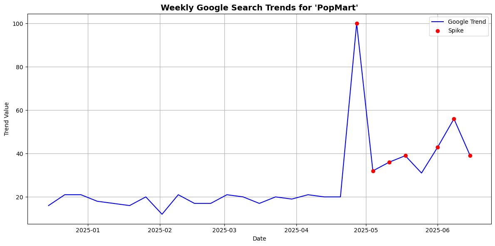
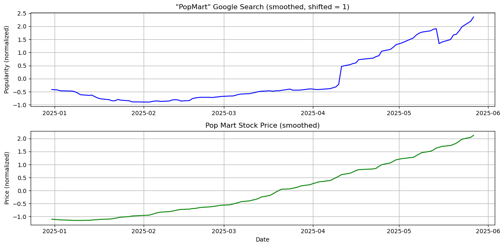
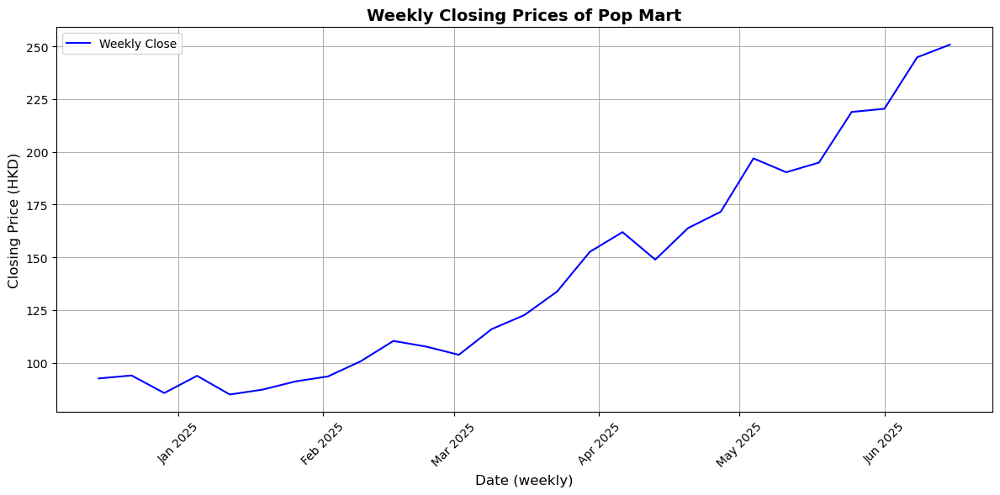
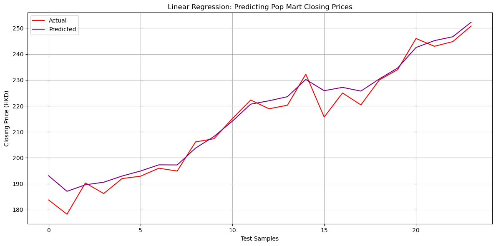
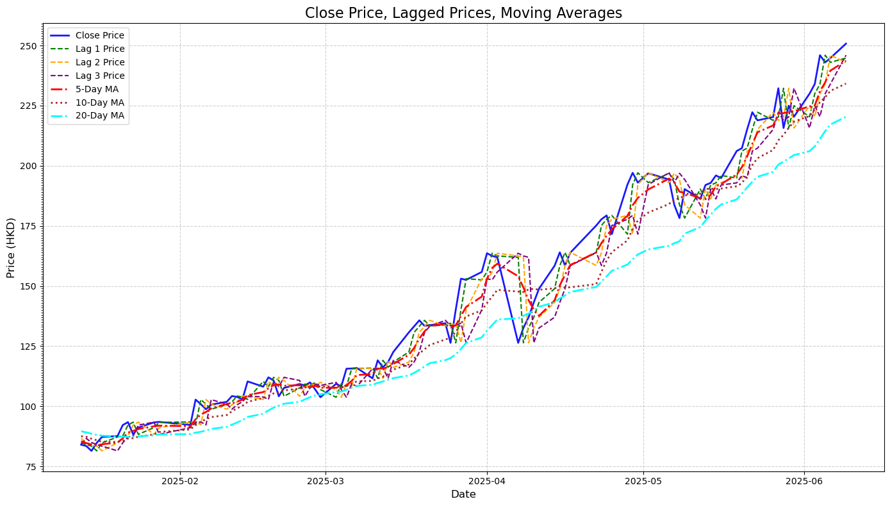
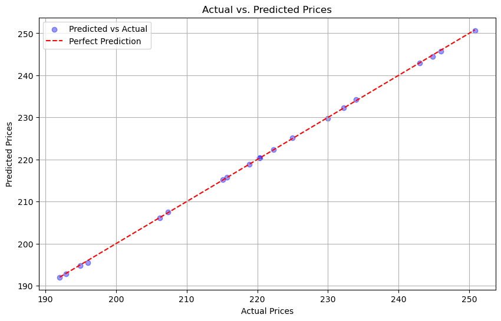

Predicting Pop Mart’s Stock Price Based on Google Trends#
Author: Sandy Xie
Course Project, UC Irvine, Math 10, Spring 25
I would like to post my notebook on the course’s website. [Yes]
pip install yfinance
Requirement already satisfied: yfinance in /Users/sandyxx/anaconda3/lib/python3.11/site-packages (0.2.62)
Requirement already satisfied: pandas>=1.3.0 in /Users/sandyxx/anaconda3/lib/python3.11/site-packages (from yfinance) (2.0.3)
Requirement already satisfied: numpy>=1.16.5 in /Users/sandyxx/anaconda3/lib/python3.11/site-packages (from yfinance) (1.24.3)
Requirement already satisfied: requests>=2.31 in /Users/sandyxx/anaconda3/lib/python3.11/site-packages (from yfinance) (2.31.0)
Requirement already satisfied: multitasking>=0.0.7 in /Users/sandyxx/anaconda3/lib/python3.11/site-packages (from yfinance) (0.0.11)
Requirement already satisfied: platformdirs>=2.0.0 in /Users/sandyxx/anaconda3/lib/python3.11/site-packages (from yfinance) (3.10.0)
Requirement already satisfied: pytz>=2022.5 in /Users/sandyxx/anaconda3/lib/python3.11/site-packages (from yfinance) (2023.3.post1)
Requirement already satisfied: frozendict>=2.3.4 in /Users/sandyxx/anaconda3/lib/python3.11/site-packages (from yfinance) (2.4.6)
Requirement already satisfied: peewee>=3.16.2 in /Users/sandyxx/anaconda3/lib/python3.11/site-packages (from yfinance) (3.18.1)
Requirement already satisfied: beautifulsoup4>=4.11.1 in /Users/sandyxx/anaconda3/lib/python3.11/site-packages (from yfinance) (4.12.2)
Requirement already satisfied: curl_cffi>=0.7 in /Users/sandyxx/anaconda3/lib/python3.11/site-packages (from yfinance) (0.11.3)
Requirement already satisfied: protobuf>=3.19.0 in /Users/sandyxx/anaconda3/lib/python3.11/site-packages (from yfinance) (6.31.1)
Requirement already satisfied: websockets>=13.0 in /Users/sandyxx/anaconda3/lib/python3.11/site-packages (from yfinance) (15.0.1)
Requirement already satisfied: soupsieve>1.2 in /Users/sandyxx/anaconda3/lib/python3.11/site-packages (from beautifulsoup4>=4.11.1->yfinance) (2.4)
Requirement already satisfied: cffi>=1.12.0 in /Users/sandyxx/anaconda3/lib/python3.11/site-packages (from curl_cffi>=0.7->yfinance) (1.15.1)
Requirement already satisfied: certifi>=2024.2.2 in /Users/sandyxx/anaconda3/lib/python3.11/site-packages (from curl_cffi>=0.7->yfinance) (2025.4.26)
Requirement already satisfied: python-dateutil>=2.8.2 in /Users/sandyxx/anaconda3/lib/python3.11/site-packages (from pandas>=1.3.0->yfinance) (2.8.2)
Requirement already satisfied: tzdata>=2022.1 in /Users/sandyxx/anaconda3/lib/python3.11/site-packages (from pandas>=1.3.0->yfinance) (2023.3)
Requirement already satisfied: charset-normalizer<4,>=2 in /Users/sandyxx/anaconda3/lib/python3.11/site-packages (from requests>=2.31->yfinance) (2.0.4)
Requirement already satisfied: idna<4,>=2.5 in /Users/sandyxx/anaconda3/lib/python3.11/site-packages (from requests>=2.31->yfinance) (3.4)
Requirement already satisfied: urllib3<3,>=1.21.1 in /Users/sandyxx/anaconda3/lib/python3.11/site-packages (from requests>=2.31->yfinance) (1.26.16)
Requirement already satisfied: pycparser in /Users/sandyxx/anaconda3/lib/python3.11/site-packages (from cffi>=1.12.0->curl_cffi>=0.7->yfinance) (2.21)
Requirement already satisfied: six>=1.5 in /Users/sandyxx/anaconda3/lib/python3.11/site-packages (from python-dateutil>=2.8.2->pandas>=1.3.0->yfinance) (1.16.0)
Note: you may need to restart the kernel to use updated packages.
Introduction#
Pop Mart, founded in 2010, is a Chinese designer toy company known for popularizing the “blind box” trend—sealed packages with randomly selected collectible figures. It collaborates with artists to produce popular series like Skullpanda, Molly, Dimoo, and Labubu, which are highly sought after by young consumers across Asia and globally.
In this project, I will analyze the impact of online search trends on Pop Mart’s stock price, and explore whether public interest on platforms like Google can help predict price movements. Using Google Trends data and historical stock prices from Yahoo Finance, I aim to understand how digital attention translates into real-world financial signals.
Data Description and Organization#
import yfinance as yf
import pandas as pd
# Fetch Pop Mart stock data and clean it up
popmart = yf.Ticker("9992.HK")
df = popmart.history(period="6mo") # last 6 months
df.index = df.index.date
df = df.drop(columns=['Dividends', 'Stock Splits'])
df['Weekday'] = pd.to_datetime(df.index).day_name()
df['Month'] = pd.to_datetime(df.index).month
print(df.head())
Open High Low Close Volume Weekday \
2024-12-12 91.324006 93.813755 91.324006 93.216217 6062628 Thursday
2024-12-13 93.216222 94.610483 92.120734 92.568886 3588777 Friday
2024-12-16 92.120734 95.954947 92.120734 94.859459 6251635 Monday
2024-12-17 93.913355 96.502693 93.614582 93.813759 4706851 Tuesday
2024-12-18 94.610480 94.809656 92.768066 94.311707 3240260 Wednesday
Month
2024-12-12 12
2024-12-13 12
2024-12-16 12
2024-12-17 12
2024-12-18 12
The table below shows how data points are distributed across the days of the week.
weekdays = ["Monday", "Tuesday", "Wednesday", "Thursday", "Friday"]
df[weekdays] = 0
for day in weekdays:
df.loc[df["Weekday"] == day, day] = 1
weekday_counts = df[weekdays].sum(axis=0)
print(weekday_counts)
Monday 24
Tuesday 26
Wednesday 23
Thursday 24
Friday 23
dtype: int64
I collected Google Trends data for keywords like “PopMart” over the past six months and combined it with daily stock prices for Pop Mart (9992.HK) to perform a regression analysis.
trend_df = pd.read_csv("popmart_trends.csv", skiprows=2)
trend_df.columns = ["Date", "PopMartTrend"]
trend_df["Date"] = pd.to_datetime(trend_df["Date"]).dt.date
trend_df.set_index("Date", inplace=True)
merged_df = df.join(trend_df, how="inner")
# Preview merged data
print(merged_df.head())
Open High Low Close Volume Weekday \
2024-12-12 91.324006 93.813755 91.324006 93.216217 6062628 Thursday
2024-12-13 93.216222 94.610483 92.120734 92.568886 3588777 Friday
2024-12-16 92.120734 95.954947 92.120734 94.859459 6251635 Monday
2024-12-17 93.913355 96.502693 93.614582 93.813759 4706851 Tuesday
2024-12-18 94.610480 94.809656 92.768066 94.311707 3240260 Wednesday
Month Monday Tuesday Wednesday Thursday Friday PopMartTrend
2024-12-12 12 0 0 0 1 0 16
2024-12-13 12 0 0 0 0 1 16
2024-12-16 12 1 0 0 0 0 14
2024-12-17 12 0 1 0 0 0 16
2024-12-18 12 0 0 1 0 0 16
Visualization#
import matplotlib.pyplot as plt
import pandas as pd
import numpy as np
# Resample to weekly trends
merged_df.index = pd.to_datetime(merged_df.index)
weekly_trend = merged_df["PopMartTrend"].resample("W").last()
# Identify spikes (example: values greater than 75th percentile)
threshold = weekly_trend.quantile(0.75)
spike_weeks = weekly_trend[weekly_trend > threshold]
# Plot the trend line
plt.figure(figsize=(12, 6))
plt.plot(weekly_trend.index, weekly_trend.values, label="Google Trend", color='blue')
plt.scatter(spike_weeks.index, spike_weeks.values, color='red', label='Spike', zorder=5)
# Step 4: Add titles and labels
plt.title("Weekly Google Search Trends for 'PopMart'", fontsize=14, weight='bold')
plt.xlabel("Date")
plt.ylabel("Trend Value")
plt.legend()
plt.grid(True)
plt.tight_layout()
plt.show()

Based on the graph, I observed several significant spikes in Google search interest for “PopMart,” with one of the most dramatic occurring around late April. From what I know, April 25th coincides with the release of the highly anticipated “The Monsters: Big into Energy – Labubu” series. Given how popular Labubu figures are among collectors, it makes sense that this product launch would trigger a surge in online searches. This suggests that spikes in Google Trends are not random, but are often tied to major product drops or events.
Smooth the data using a rolling average
def smooth_series(series, window=20):
return series.rolling(window=window, center=True).mean()
Shift the trend data forward by 1 day (to simulate using search data to predict price)
shift_days = 1
smoothed_trend = smooth_series(merged_df["PopMartTrend"]).shift(shift_days)
smoothed_price = smooth_series(merged_df["Close"])
Normalize both series for visual comparison (centered around 0, range scaled)
def normalize(series):
return (series - series.mean()) / series.std()
trend_normalized = normalize(smoothed_trend.dropna())
price_normalized = normalize(smoothed_price.dropna())
Align the two series
aligned_df = pd.DataFrame({
"Trend": trend_normalized,
"Price": price_normalized
}).dropna()
Plot the “PopMart” Google Trends and Stock Price Graph
# Upper plot: "PopMart" Google Trends
plt.figure(figsize=(12, 6))
plt.subplot(2, 1, 1)
plt.plot(aligned_df.index, aligned_df["Trend"], label="PopMart Search Trend", color='blue')
plt.title('"PopMart" Google Search (smoothed, shifted = 1)')
plt.ylabel("Popularity (normalized)")
plt.grid(True)
# Bottom plot: Stock price
plt.subplot(2, 1, 2)
plt.plot(aligned_df.index, aligned_df["Price"], label="Pop Mart Stock Price", color='green')
plt.title("Pop Mart Stock Price (smoothed)")
plt.ylabel("Price (normalized)")
plt.xlabel("Date")
plt.grid(True)
plt.tight_layout()
plt.show()

Calculate the correlation between these two graph
correlation = aligned_df["Trend"].corr(aligned_df["Price"])
print(f"Correlation between Google Trend and Stock Price: {correlation:.3f}")
Correlation between Google Trend and Stock Price: 0.932
A correlation of 0.932 indicates a very strong positive linear relationship between Google search interest for “PopMart” and the company’s stock price. This suggests that as search interest rises, the stock price tends to increase as well, and vice versa. The strength of this relationship implies that Google Trends may serve as a meaningful indicator of market sentiment or consumer demand for Pop Mart.
Add clear labels and format the dates
# Ensure datetime index
merged_df.index = pd.to_datetime(merged_df.index)
# Resample weekly closing price
weekly_prices = merged_df["Close"].resample("W").last()
# Plot
plt.figure(figsize=(12, 6))
plt.plot(weekly_prices.index, weekly_prices.values, label="Weekly Close", color="blue")
plt.title("Weekly Closing Prices of Pop Mart", fontsize=14, weight='bold')
plt.xlabel("Date (weekly)", fontsize=12)
plt.ylabel("Closing Price (HKD)", fontsize=12)
# Format dates on x-axis
plt.gca().xaxis.set_major_locator(mdates.MonthLocator())
plt.gca().xaxis.set_major_formatter(mdates.DateFormatter('%b %Y'))
plt.xticks(rotation=45)
plt.grid(True)
plt.tight_layout()
plt.legend()
plt.show()

This graph shows a clear upward trend in Pop Mart’s weekly closing stock prices from December 2024 to June 2025. After stabilizing in late 2024 and early 2025, the stock steadily rose from February, with a marked acceleration in March. Its consistently positive trajectory, even with minor dips, indicates growing consumer demand. By late June 2025, the stock price had nearly tripled compared to its December levels, reflecting significant market momentum.
Predicting Pop Mart’s Stock Price using Google Trends data, using regression models#
To enhance the accuracy of our stock price prediction model, we incorporated the Exponential Moving Average (EMA) into our analysis. In the context of Pop Mart’s stock, using the EMA helps us better capture the short-term market momentum. We calculated the 3-day EMA on the closing prices of Pop Mart to smooth out daily fluctuations and better identify the underlying trend.
from sklearn.linear_model import LinearRegression
from sklearn.model_selection import train_test_split
from sklearn.preprocessing import StandardScaler
from sklearn.metrics import mean_absolute_error, r2_score
Compute EMA from Close price
merged_df['EMA_3'] = merged_df['Close'].ewm(span=3, adjust=False).mean()
Use EMA, Google Trends, and Opening Price as features
df_sub = merged_df[['Close', 'Open', 'PopMartTrend', 'EMA_3']].dropna()
X = df_sub[['Open', 'PopMartTrend', 'EMA_3']]
y = df_sub['Close']
Train-test split
X_train, X_test, y_train, y_test = train_test_split(X, y, test_size=0.2, shuffle=False)
Fit linear regression model
reg = LinearRegression()
reg.fit(X_train, y_train)
y_pred = reg.predict(X_test)
Calculate the mean absolute error
mae = mean_absolute_error(y_test, y_pred)
r2 = r2_score(y_test, y_pred)
print("Mean Absolute Error:", mae)
print("R² Score:", r2)
Mean Absolute Error: 2.990450059497507
R² Score: 0.9634998006920182
Visualize the data
plt.figure(figsize=(12,6))
plt.plot(y_test.values, label="Actual", color="red")
plt.plot(y_pred, label="Predicted", color="purple")
plt.title("Linear Regression: Predicting Pop Mart Closing Prices")
plt.xlabel("Test Samples")
plt.ylabel("Closing Price (HKD)")
plt.legend()
plt.grid(True)
plt.tight_layout()
plt.show()

Using Lagged Prices and Moving Averages for Predictions#
Lagged prices are the stock’s historical values over the past few days. These features capture momentum and immediate past trends. For example, a sudden dip or spike in the previous days often carries predictive power for near-future prices.
Moving averages are calculated over 5, 10, and 20-day windows, served as smoothing indicators that helped the model focus on broader trends rather than day-to-day fluctuations. They make it easier to detect the underlying trend.
lag_days = [1, 2, 3]
for lag in lag_days:
merged_df[f'Lag_{lag}_Close'] = merged_df['Close'].shift(lag)
moving_avg_days = [5, 10, 20]
for ma in moving_avg_days:
merged_df[f'MA_{ma}'] = merged_df['Close'].rolling(window=ma).mean()
Also include the EMA from above
merged_df['EMA_3'] = merged_df['Close'].ewm(span=3, adjust=False).mean()
features = (
[f'Lag_{lag}_Close' for lag in lag_days] +
[f'MA_{ma}' for ma in moving_avg_days] +
['EMA_3', 'PopMartTrend']
)
processed_data = merged_df[features + ['Close']].dropna()
Create a visual tha compare close price, lagged prices, and moving averages
import matplotlib.ticker as mticker
plt.figure(figsize=(14, 8))
# Plot actual closing price
plt.plot(processed_data.index, processed_data['Close'],
label='Close Price', color='blue', linewidth=2, alpha=0.9)
# Plot lagged prices
lag_colors = ['green', 'orange', 'purple']
for lag, color in zip([1, 2, 3], lag_colors):
plt.plot(processed_data.index, processed_data[f'Lag_{lag}_Close'],
label=f'Lag {lag} Price', linestyle='--', color=color, linewidth=1.5)
# Plot moving averages
ma_styles = ['-.', ':', '-.']
ma_colors = ['red', 'brown', 'cyan']
for ma, style, color in zip([5, 10, 20], ma_styles, ma_colors):
plt.plot(processed_data.index, processed_data[f'MA_{ma}'],
label=f'{ma}-Day MA', linestyle=style, color=color, linewidth=2)
# Final plot formatting
plt.title('Close Price, Lagged Prices, Moving Averages', fontsize=16)
plt.xlabel('Date', fontsize=12)
plt.ylabel('Price (HKD)', fontsize=12)
plt.legend(loc='upper left', fontsize=10)
plt.gca().yaxis.set_major_locator(mticker.AutoLocator())
plt.gca().yaxis.set_minor_locator(mticker.MultipleLocator(1))
plt.grid(True, linestyle='--', alpha=0.6)
plt.tight_layout()
plt.show()

Using Linear Regression Model#
Define feature and target values
from sklearn.model_selection import train_test_split
features = ['Lag_1_Close', 'Lag_2_Close', 'Lag_3_Close', 'MA_5', 'MA_10', 'MA_20', 'EMA_3', 'PopMartTrend']
target = 'Close'
Split into feature matrix X and target vector y
X = processed_data[features]
y = processed_data[target]
Train-test split and print data sizes
X_train, X_test, y_train, y_test = train_test_split(X, y, test_size=0.2, random_state=42, shuffle=False)
print("Training data size:", X_train.shape)
print("Testing data size:", X_test.shape)
Training data size: (78, 8)
Testing data size: (20, 8)
Use raise in conjunction with a conditional statement to ensure all required columns exist
if not all(col in processed_data.columns for col in features + [target]):
raise ValueError("Some required columns are missing in the dataset.")
Prepare feature matrix (X) and target vector (y)
X = processed_data[features].dropna().to_numpy()
y = processed_data[target].dropna().to_numpy().ravel()
Split data into training and testing sets (80% train, 20% test)
X_train, X_test, y_train, y_test = train_test_split(X, y, test_size=0.2, random_state=42, shuffle=False)
Train the Linear Regression model and display coefficients
model = LinearRegression()
model.fit(X_train, y_train)
coefficients = pd.DataFrame({
'Feature': features,
'Coefficient': model.coef_
})
print("Linear Regression Coefficients:")
print(coefficients)
Linear Regression Coefficients:
Feature Coefficient
0 Lag_1_Close -0.456576
1 Lag_2_Close -0.189789
2 Lag_3_Close -0.053455
3 MA_5 -0.357131
4 MA_10 -0.121174
5 MA_20 0.009436
6 EMA_3 2.168981
7 PopMartTrend -0.002819
Calculate the evaluation results
from sklearn.metrics import mean_absolute_error, mean_squared_error, r2_score
y_pred = model.predict(X_test)
mae = mean_absolute_error(y_test, y_pred)
mse = mean_squared_error(y_test, y_pred)
r2 = r2_score(y_test, y_pred)
print(f"Mean Absolute Error (MAE): {mae:.4f}")
print(f"Mean Squared Error (MSE): {mse:.4f}")
print(f"R-squared (R²): {r2:.4f}")
Mean Absolute Error (MAE): 0.1460
Mean Squared Error (MSE): 0.0336
R-squared (R²): 0.9999
Visualization for comparison
plt.figure(figsize=(10, 6))
plt.scatter(y_test, y_pred, alpha=0.4, color='blue', label='Predicted vs Actual')
plt.plot([min(y_test), max(y_test)], [min(y_test), max(y_test)], color='red', linestyle='--', label='Perfect Prediction')
plt.xlabel('Actual Prices')
plt.ylabel('Predicted Prices')
plt.title('Actual vs. Predicted Prices')
plt.legend()
plt.grid(True)
plt.show()

Using Decision Tree Regressor#
dt_model = DecisionTreeRegressor(
max_depth=3,
min_samples_split=5,
min_samples_leaf=3,
random_state=42
)
from sklearn.tree import DecisionTreeRegressor
from sklearn.metrics import mean_absolute_error, mean_squared_error, r2_score
# Create and train model
dt_model = DecisionTreeRegressor(max_depth=3, random_state=42)
dt_model.fit(X_train, y_train)
# Predict
y_pred = dt_model.predict(X_test)
# Evaluate
mae = mean_absolute_error(y_test, y_pred)
mse = mean_squared_error(y_test, y_pred)
r2 = r2_score(y_test, y_pred)
print(f"Decision Tree MAE: {mae:.4f}")
print(f"Decision Tree MSE: {mse:.4f}")
print(f"Decision Tree R² : {r2:.4f}")
Decision Tree MAE: 30.1646
Decision Tree MSE: 1227.9711
Decision Tree R² : -2.8607
In my observation here, the Decision Tree model performed significantly worse than the Linear Regression model. From the line graphs previously, my closing price data shows a smooth and steady upward trend. This kind of trend is well-suited for linear models like Linear Regression. On the other hand, Decision models rely on sharp splits that don’t align well with smooth financial data. Because my dataset is relatively small, the Decision Tree may create splits that are too specific and fail to generalize well to new or unseen data.
Summary#
In this project, I explored whether Google search trends can help predict Pop Mart’s stock price. By merging search interest data for the keyword “PopMart” with historical stock prices from Yahoo Finance, I created a dataset to analyze the relationship between public interest and market behavior. I engineered features like lagged closing prices and moving averages to reflect past market patterns, and tested various models—Linear Regression, Random Forest, and Decision Tree Regressor—to evaluate their prediction accuracy. Overall, my findings suggest that digital attention, as measured by Google Trends, combined with historical pricing features, can be a useful tool in forecasting Pop Mart’s stock movement.
References#
What is the source of your dataset(s)?
Were any portions of the code or ideas taken from another source? List those sources here and say how they were used.
The comparison graph is inspired by this research paper: https://www.ccom.ucsd.edu/~cdeotte/papers/GoogleTrends.pdf
Netflix Stock Price Prediction to calculate EMA
TQQQ Stock Predictor Project utilizing Lagged Prices